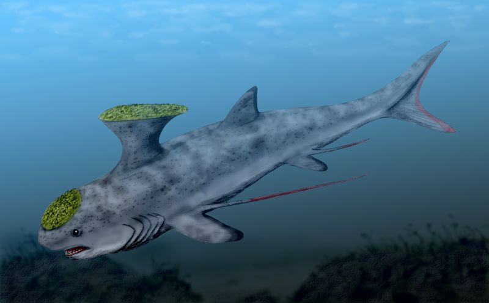

Quick Facts
- First discovered: 1800s
- Habitat: Oceans all over the world
- Conservation Status: Extinct
- Size: 1.5m (4.9ft)
- Danger to Humans: Not Applicable
Overview
 The Stethacanthus (also known as the anvil shark) is an extinct genus of the ancestors of sharks. It lived during the Late Devonian to Late Carboniferous period, dying out around 300 million years ago according to pop-science. Although this animal is extinct, I felt it was still appropriate to include it since it is one of the most bizarre creatures I've ever seen.
Upon first seeing the long, sharp spines near its fins, the man who first discovered the anvil shark, the Paleontologist John Strong Newberry thought that they were supposed to be a new type of dorsal fin. However, complete remains of the anvil shark were extremely rare, and for nearly a century, not much could be said about the spines, or the animal in general, for a long time.
It's diet comprised of small fish and animals that would be considered bottom-dwellers. Due to this, it is thought that the anvil shark was a bottom-dwelling predator.
The teeth were strange as well, with each tooth having multiple sharp points or "spikes". However, it didn't just had teeth in its jaws, it had similar structures on its head, throat, and the "anvil" on its back. It's not clear what these features were for, whether they were for attracting mates, scaring off predators, or for a different reason.